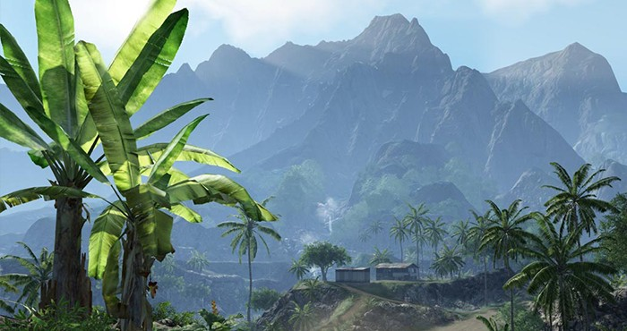
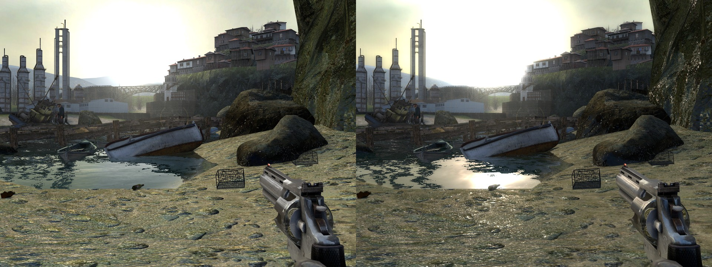
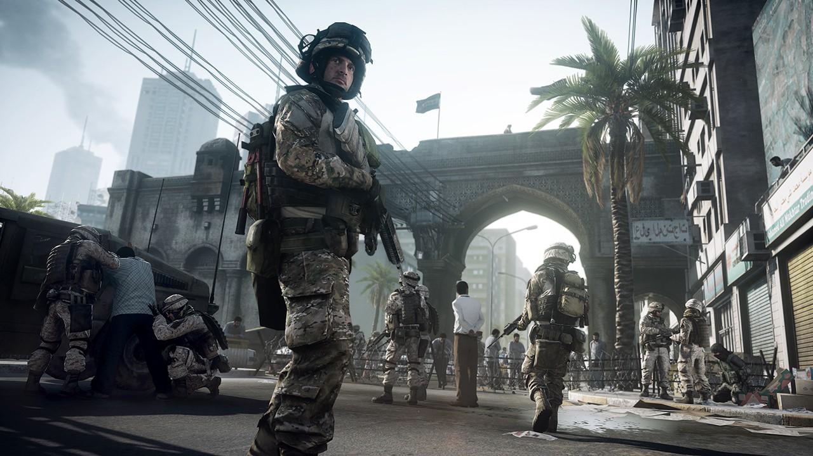
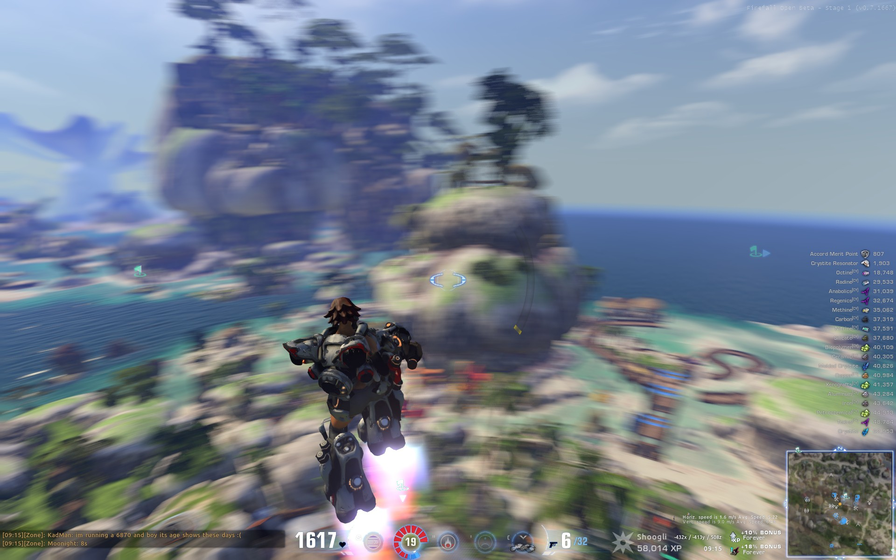

Часть 1:
Апофеоз Past-Gen'a
Введение
Этот период можно считать Ренессансом игровой индустрии. Именно Xbox 360 и Playstation 3 вызвали такой колоссальный скачок в графике, каких не было в предыдущих поколениях и, возможно, уже не будет в следующих. Наверное, благодаря этому Past-Gen продержался так долго. Хоть в последнее время уже все понимали, что ему давно пора на пенсию, но графика и по сей день смотрелась весьма неплохо. А во всяких Last of Us — и вовсе шедеврально.
В результате этой «Эпохи Возрождения» появилось больше графических технологий, чем за всю предыдущую историю игр. Конечно, так произошло в том числе и благодаря затянувшемуся жизненному циклу этих консолей. Но это далеко не основная причина. Да, нынешний past-gen охватил огромный промежуток времени. Так что и в датах появления «экспонатов» из нашего сегодняшнего списка — колоссальный разброс. Одни явились свету практически недавно, другие — буквально сразу же после релиза этих консолей, а третьи — и вовсе существовали и раньше, но расцвели во всей красе лишь на PS3/X360.
Translucence - просвечиваемость
Если закрыть фонарик пальцем, можно заметить, что он просвечивает. Возникает интересный парадокс: при обычных условиях ты смотришь на руку — и она ведь непрозрачная. Плотная, матовая. Не просвечивающая. Но если расположить яркий источник света непосредственно за ней, то оказывается, что свет она всё-таки пропускает. И так не только с человеческим телом. Воск, матовый пластик, молоко, лист растения… Практически все органические соединения и множество неорганических. То есть, большинство того, что нас окружает.
{kind=link}
Этот эффект в графике называется SSS (SubSurface Scattering, подповерхностное рассеяние). И в фильмах он широко используется уже очень давно. Просто потому, что без него лицо персонажа будет выглядеть либо как гипс (если не блестит), либо как эмалированная железка (если блестит). Он повышает реалистичность любой модели, особенно персонажей. Вот только при этом требует немерено процессорного времени. А оттого — для реалтайм-графики просвечиваемость была недоступна до выхода Crysis 1, которой и удалось впервые воссоздать SSS в реалтайме с помощью технологии Thin/Planar (foliage) Translucence.
Тут, как раз, тот самый случай, когда мощности железа просто однажды позволили. В Crytek не изобретали ничего нового, а лишь взяли на вооружение технологию, которая уже давным-давно используется в кинематографе, да и от стандартного алгоритма освещения отличается лишь одной мелочью. Обычно свет считается только с одной стороны полигона, тут же рендеринг осуществляется по тому же самому алгоритму, но освещённость считается не с одной, а с обеих сторон и их результат плюсуется. По сути, ничего нового. Просто в 2 раза больше вычислений на свет. И именно поэтому данная технология раньше не использовалась. В современных играх этот вид просвечиваемости используется повсеместно. Потому что по нынешним меркам двойной или даже тройной расчёт прямого света — и в подмётки не годится прожорливости всяких TressFX'ов. Как ясно из названия, применение этой технологии сильно ограничено. Она подходит лишь для тонких плоских объектов: бумага, ткань, листва, плёнка. Для по-настоящему объёмных вещей — не годится. Однако именно это стало первым шагом к реалистичным лицам персонажей, ведь за ним последовал и второй: Battlefield's 3/«Approximated»/DICE's Translucence
{kind=link}
{kind=link}
У этой просвечиваемости нет собственного названия, поэтому как её только ни называют: approximated (аппроксимированная/приблизительная), DICE's (просвечиваемость от DICE), Battlefield's. Эта просвечиваемость действительно заслуживает внимания, потому что разработчикам удалось получить правдоподобный псевдо-SSS практически по цене предыдущего экспоната. Конечно, эта технология воспроизводит SSS не совсем корректно. Есть ряд артефактов, возникающих при определённых условиях, но рядовой игрок их даже не заметит. Итого, мы имеем практически бесплатный по ресурсам SSS, который работает на по-настоящему объёмных объектах.
Неудивительно, что со стремительностью сдетонировавшей бомбы эта просвечиваемость разлетелась по всем игровым студиям мира и была реализована во всех существующих движках. Как ни парадоксально, до сих пор она была задействована всего лишь в нескольких играх.
Depth of Field - глубина резкости
Так уж решила природа, что человеческий глаз — фокусируется. Научно-технический прогресс ушёл далеко вперёд, и фотоаппараты с видеокамерами уже давным-давно могут снимать абсолютно резкое изображение. Вот только оно никому не нужно. DoF придаёт картинке «киношности». Он позволяет акцентировать внимание зрителя на наиболее важном объекте. Расфокус настолько необходим в кино, что даже если его не было в оригинальном видео — его искусственно туда добавляют. Попытки воссоздать Depth of Field в играх начались давно, до прихода нынешнего next-gen'а. использовались следующие технологии:
Размытие по карте глубины.
Суть проста: Есть исходная (резкая) картинка и к ней есть карта глубины. Берём первую — и размываем её по второй. Где на карте глубины белое — там максимум размытия, где чёрное — там его нет (фокус). Как говорится, всё гениальное — просто. Улучшая различные аспекты этого метода, разработчикам в итоге удалось сделать довольно убедительный расфокус.
Вот только у него есть 2 неустранимые проблемы:
- прозрачные объекты размываются некорректно, т.к. каждый пиксель имеет только одну позицию по глубине.
- на границах объектов размытие тоже получается некорректным: либо цвет переднего плана «заезжает» на фон, либо наоборот.
{kind=link}
Bokeh.
Эффект Боке — такое хитрое размытие, после которого фон становится не просто мутным, а приобретает форму ярких кружочков/многоугольников. В нём две оговорённые выше проблемы частично решены. Плюс к тому, качество размытия — тоже выше.
HDR - High Dynamic Range -
высокий динамический диапазон
В природе нет такого понятия, как «максимально яркий свет». Свет может быть любой яркости: от ноля и до бесконечности. Когда мы видим какой-то цвет как абсолютно белый — это лишь значит, что в данный момент наш глаз выбрал эту яркость в качестве максимальной, чтобы разглядеть какие-то детали. Так обстоят дела в природе. В играх же есть текстуры - обычные картинки в формате jpg/png/tga. У них есть чёрное и белое значение, и некоторое количество оттенков между ними. Всё. Давайте представим, что у нас есть некоторая яркая текстура и нам надо понизить её яркость:
{kind=link}
{kind=link}
{kind=link}
Мы получим данный результат, потому что в картинке максимально яркий — это белый. А всё, что ярче него — обрезано до него и после нашей обработки превратится в сплошной серый вместо того, чтобы «открыть» нам те детали, которые находятся в пересвеченной области.
HDR расширяет диапазон возможных цветов. С ней — они могут быть ярче единицы. Если отрисовать такую картинку «как есть», то эти «сверх-яркие» цвета будут выглядеть как максимальный белый (потому что монитор не может выдать цвет ярче), но на самом деле их фактические значения не обрежутся. Поэтому с HDR картинка выглядит гораздо корректнее.
{kind=link}
Помимо очевидного повышения реализма «в одно включение» эта технология также позволяет изменять яркость картинки на стадии пост-эффектов. То есть, с её помощью можно сделать эффект смены экспозиции (также известный как Tone Mapping) - это когда картинка плавно меняет яркость при переходе из тёмного помещения в светлое или наоборот. При наличии HDR гейм-девелопер ничем не ограничен в пост-обработке, и может сделать картинку ещё более выразительной (это называется цветокоррекцией).
Enlighten - рассеянное освещение
{kind=link}
В 2007 году никому не известная компания Geomerics опубликовала трейлер, демонстрирующий работу технологии Enlighten, реализующей рассеянное освещение. Эта невероятная по тем временам технология поразила умы многих, однако на момент анонса железо всё ещё не позволяло считать такое в реалтайме с комфортным для игры FPS. Разработчики не забросили свою затею и с 2008 года с нарастающим энтузиазмом показывали всё новые и новые демонстрации.
В итоге никто и не заметил, как эта технология стала мейнстримом и по факту стала стандартом. Сейчас все основные игровые движки используют Enlighten.
Motion Blur - размытие в движении
{kind=link}
Motion Blur или размытие в движении, как и DoF добавляет реализма. И, опять же, как и DoF, для хорошего качества исполнения требует немало ресурсов. Кроме того, в отличие от расфокуса, этот эффект необходим: без него видео будет казаться дёрганным. Вообще, в графике есть несколько способов рендеринга Motion Blur. Но конкретно в играх практически всегда используется Multiple Exposure. Принцип метода:
Каждый кадр рендерится не один раз в один момент времени, а много-много раз, которые равномерно распределены по всей длительности кадра. Потом все эти экспозиции смешиваются вместе с разной степенью интенсивности. Получается, что вместо одной фазы движения мы засняли несколько, которые все вместе формируют нужный нам эффект размытости. Очевидно, что для качественного результата этих самых экспозиций должно быть как можно больше. Иначе они будут видны по отдельности, и картинка развалится на ступенчатые фазы. Кроме того, не надо забывать, что каждая такая экспозиция — это, по сути, отдельный расчёт кадра кадр. То есть, если у нас 4 экспозиции, та же самая картинка будет считаться в 4 раза дольше. Если 8 — то в 8, и т.д.
Может показаться, что этот метод плох из-за своей неповоротливости. Но на самом деле нынешнее железо вполне в состоянии пересчитывать кадр по 2, 4, 8 и больше раз. А при большом количестве «шажков» — этому методу нет равных. потому что считается он самым «дубовым» методом, и оттого — самым правильным. Если не считать этих «ступенек» — с ним в принципе невозможны артефакты, которые есть у других методов.
Другой способ — векторный Motion blur. Принцип работы: картинка рендерится только один раз. Но помимо неё — «невидимо» для игрока также считается специальная карта векторов. Она показывает, в каком направлении двигается каждый пиксель на отрендеренной картинке. После чего основная картинка «размазывается» в соответствии с направлениями (векторами) со второй карты. Прелесть этого метода в том, что на нынешнем железе его уже можно использовать, и при этом он выдаст гладкую картинку, без фаз движения и у него нет никакого «количества экспозиций», так что качество размытия всегда безупречное, не надо жертвовать ради него производительностью.
Но есть и минусы. Самый серьёзный из них — это специфические артефакты. К примеру, если один объект движется очень быстро перед вторым. Игра считает картинку только один раз, в какой-то одной фазе. И в этой фазе — движущаяся часть закрыла неподвижную. Алгоритму просто неоткуда взять информацию о том, что должно быть за этой частью. В результате неподвижный фон тоже размывается.
Именно из-за них в большинстве игр используется только метод множественной экспозиции. Правда, у векторного блюра существует один подвид, который довольно широко используется в играх. Это Zoom Blur или Radial Blur – в нём векторы размытия направлены от центра кадра к краям.